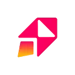

МолекулаАгрегаторы нейросетей
Молекула объединяет модели для текстов, изображений, видео и музыки. В одном аккаунте можно подобрать инструмент под этап работы, сохранить инструкции проекта и использовать готовые роли.
К задаче в МолекулеNo-code и Low-code платформы: Опишите данные, роли пользователей и действия. Сравните экспорт, интеграции и возможность изменить проект после генерации.
Составьте спецификацию приложения учёта заявок перед работой в конструкторе. Молекула поможет подготовить описание экранов и пример логики; сборка в выбранной no-code платформе, настройка доступа и публикация приложения остаются отдельными действиями.
Подготовь спецификацию приложения заявок для небольшой мастерской. Есть клиент, менеджер и исполнитель. Опиши поля, статусы, доступ каждой роли и действия на экранах без привязки к платформе.

Молекула объединяет модели для текстов, изображений, видео и музыки. В одном аккаунте можно подобрать инструмент под этап работы, сохранить инструкции проекта и использовать готовые роли.
К задаче в Молекуле
Akkio предлагает средства работы с данными и построения прогнозов без написания кода. На платформе предусмотрены преобразование исходной информации, разбор данных и моделей, а также их развёртывание. Пользователь работает со своими материалами; полученный прогноз остаётся модельной оценкой, а не известным будущим результатом.
Для «Axiom» сначала определите свою задачу и требуемый результат. Карточка относится к направлению «No-code и Low-code платформы».

Bardeen собирает автоматизации из настраиваемых блоков без написания программного кода. В сценариях можно объединять сбор информации с сайтов, действия в веб-приложениях и передачу данных в Google Sheets. Это инструмент для повторяющихся рабочих операций, где последовательность шагов задаётся самим пользователем.
Blink помогает получить основу приложения из словесного задания. Готовый интерфейс нужно проверить на реальном пользовательском действии и затем продолжить доработку.
Botsheets связывает диалоговый интерфейс с таблицами Google Sheets. Такой подход подходит для сбора записей и ответов, основанных на содержимом таблицы.
«Chaplin» представлен в разделе «No-code и Low-code платформы». При выборе проверьте нужную операцию и условия работы с результатом.
Dify предлагает среду для создания и эксплуатации ИИ-приложений с языковыми моделями. Инструмент ориентирован на подготовку решения и его дальнейшее развёртывание командой. Для первого сценария определите источник данных и формат результата, затем проверьте обработку запроса и ошибок; доступность платформы не означает автоматическую готовность приложения к рабочему использованию.
«FIGNEL» связан с рабочими процессами WordPress.
Для «Fluid AI» сначала определите свою задачу и требуемый результат. Карточка относится к направлению «Разработка».
Сравнивать «FoxyApps (foxyapps.ai)» с другими инструментами раздела «Разработка» удобнее на одинаковом исходном материале.

Leap AI предоставляет средства добавления ИИ-функций в приложение через API и SDK. Доступны предварительно подготовленные модели для генерации и настройки изображений. Поиск по текстовым документам и документация дополняют набор средств, которые разработчик рассматривает при подготовке своего сценария использования.
MindStudio относится к инструментам, которые помогают писать и изменять программный код. Ещё одно направление работы: работать с заданным образом ИИ-персонажа.

Mixo создаёт сайт и его содержимое по описанию проекта с помощью ИИ. В конструкторе предусмотрены список ожидания с адресами электронной почты и средства получения обратной связи. Такой набор подходит для представления ранней идеи продукта и сбора первых откликов аудитории.

Replit представляет собой браузерную среду для разработки программ с ИИ-инструментами. Участники могут совместно редактировать код, использовать готовые шаблоны и материалы для обучения. Кроме работы над проектом, среда предусматривает его развёртывание и размещение, объединяя написание программы с подготовкой к запуску.
Для «Tiktokenizer» сначала определите свою задачу и требуемый результат. Карточка относится к направлению «ИИ-ассистент».

Visily помогает переводить наброски интерфейса в экранные макеты с использованием ИИ. Источником может служить каркас, нарисованный от руки; также предусмотрены шаблоны и построение пользовательских потоков. Инструмент предназначен для подготовки прототипов приложений и сайтов, где нужно обозначить расположение элементов и связи между экранами.
Для «Aii.CX» сначала определите свою задачу и требуемый результат. Карточка относится к направлению «No-code и Low-code платформы».
«AppGenius AI» представлен в разделе «Создание контента». При выборе проверьте нужную операцию и условия работы с результатом.
Сравнивать «Appypie» с другими инструментами раздела «Автоматизация» удобнее на одинаковом исходном материале.
Сравнивать «Blink Copilot» с другими инструментами раздела «No-code и Low-code платформы» удобнее на одинаковом исходном материале.
Bubble предоставляет среду для создания приложений без самостоятельного написания кода. Для задач ИИ доступны технологии и плагины, которые разрабатывает сообщество. Пользователь собирает приложение в no-code-окружении и подключает нужные возможности через расширения, не формируя весь программный продукт вручную из исходного кода.
Code Conductor помогает создавать сайты и приложения с минимальным самостоятельным программированием. В описании отмечены настройка решения и подключение сторонних средств. Для проекта задайте реальные страницы, данные и действие пользователя, затем проверьте работу полного сценария; готовый экран не подтверждает сохранение формы, корректность прав доступа или передачу данных.
«DraftAid» готовит визуальные материалы по заданию.
GPT Jump Start предоставляет средства включения ИИ-функций в пользовательские проекты. Среди способов есть API и плагин WordPress, а для запросов предусмотрена панель управления. Продукт объединяет подготовку обращений к ИИ и выбранный вариант подключения в рамках дальнейшей работы над проектом.
«Insyte AI» помогает собрать сайт или веб-приложение.
Kode AI позволяет создавать автоматизированные рабочие процессы с применением ИИ. Платформа предусматривает no-code- и low-code-подходы, интерфейс управления и подключения к другим системам. Пользователь собирает процесс и управляет им в общей среде, выбирая необходимое сочетание инструментов автоматизации и программного участия.
miniapps AI позволяет создавать и использовать ИИ-приложения без написания кода. Сервис поддерживает генерация текста, чат-боты и настройка под разные задачи. Платформа также предусматривает обмен приложениями, объединяя подготовку собственного варианта инструмента с возможностью передать его другим пользователям для дальнейшего использования.
Сравнивать «Scribo AI» с другими инструментами раздела «Чат-боты и ассистенты» удобнее на одинаковом исходном материале.
Для «Thread» сначала определите свою задачу и требуемый результат. Карточка относится к направлению «No-code и Low-code платформы».
«Unitlab AI» представлен в разделе «Данные и аналитика». При выборе проверьте нужную операцию и условия работы с результатом.
Voiceflow помогает проектировать разговорных помощников и подготавливать их прототипы. Инструмент поддерживает тестирование и запуск в разных каналах, а также обратную связь в ходе работы. Шаблоны, готовые фрагменты кода и повторно используемые компоненты дополняют сборку выбранного сценария диалога.
Для «Zarla Website Builder» сначала определите свою задачу и требуемый результат. Карточка относится к направлению «No-code и Low-code платформы».

Arahi AI относится к инструментам, которые помогают писать и изменять программный код. Ещё одно направление работы: готовить ответы на обращения клиентов.
Botx предлагает создавать автоматизированные процессы без самостоятельного программирования, объединяя методы машинного обучения, обработки языка и компьютерного зрения. Для конкретного проекта начните с одного типа входных данных. Проверьте, какие операции доступны в выбранной конфигурации и как результат передаётся дальше; общий набор технологий не определяет качество отдельного сценария.
ChatCube создаёт ИИ-чат-ботов, которые отвечают по выбранному документу или содержанию сайта. Для подготовки такого помощника не требуется программирование. Продукт связывает исходный материал с вопросами пользователя, позволяя рассматривать содержание через разговорный интерфейс подготовленного бота в рамках конкретного источника.
«Chatforma» помогает организовать разговор с чат-ботом.
«DIY AI Website Builder» помогает собрать сайт или веб-приложение.
«DoubleO AI» помогает соединить повторяемые рабочие действия. «DoubleO AI» даёт средства для сборки ИИ-агента.
«Durable (durable.co)» помогает собрать сайт или веб-приложение.
Langflow относится к инструментам, которые помогают писать и изменять программный код. Ещё одно направление работы: собирать рабочие инструменты и операции с данными.
«Onelook» представлен в разделе «Разработка». При выборе проверьте нужную операцию и условия работы с результатом.
«Pico» помогает собрать сайт или веб-приложение.
re:tune помогает создавать приложения с языковой моделью без самостоятельного программирования. Пользователи настраивают модели для чат-ботов и персональных помощников. Работа включает подготовку ответов и обращение за поддержкой к инженерам ИИ, что позволяет развивать выбранный сценарий приложения в одном продукте.
«Solo AI» помогает собрать сайт или веб-приложение.
Для «v0.dev by Vercel Labs» сначала определите свою задачу и требуемый результат. Карточка относится к направлению «Разработка».
Для «VectorShift» сначала определите свою задачу и требуемый результат. Карточка относится к направлению «Разработка».
Для «Visary AI» сначала определите свою задачу и требуемый результат. Карточка относится к направлению «Разработка».
Страница 1 из 4
Начинайте с процесса, который понятен пользователю. Например, посетитель записывается на занятие, а сотрудник подтверждает заявку. Запишите обязательные поля и правила доступа. Удобная форма нужна вместе с сохранением записи и ограничением просмотра чужих данных.
Lovable помогает создавать веб-приложения через диалог. Bolt.new поддерживает подготовку сайтов и приложений в браузере. В v0 можно уточнять интерфейс и приложение через задания. Проверяйте конкретные возможности выбранного проекта.
Для пробного приложения используйте вымышленные заявки. Опишите переход от заполнения до подтверждения сотрудником. Укажите, что должно происходить при ошибке и повторной отправке. Оплату и сложные уведомления добавляйте после проверки основного сценария.
После генерации отправьте заявку и обновите страницу. Если она исчезла, выясните способ хранения. Изменение надписи в интерфейсе не доказывает сохранения в базе. Повторный вход должен возвращать ожидаемое состояние для выбранной роли.
Отдельно проверьте пользователя, которому разрешён только просмотр. Скрытая кнопка не заменяет проверку прав на запрос. В тестовом окружении попробуйте открыть другую разрешённую запись по прямому адресу и убедитесь, что ограничение работает согласно требованиям.
Зафиксируйте рабочую версию до расширения функций. При подключении репозитория согласуйте порядок синхронизации. Для продолжения разработки нужны код, описание хранилища и список внешних зависимостей. Отметьте элементы, которые пока используют учебное наполнение.
После публикации откройте приложение в новом сеансе без редакторских прав. Повторите основной путь на телефоне. Проверьте сообщения об ошибках и реальные контакты. Публичный адрес и доступ к рабочим данным должны соответствовать выбранным правилам приложения.
Визуальная часть подробнее рассматривается в категории конструкторов сайтов и интерфейсов. Для программного подключения внешней модели изучите API и интеграции. Новый этап добавляйте к уже проверенному поведению.